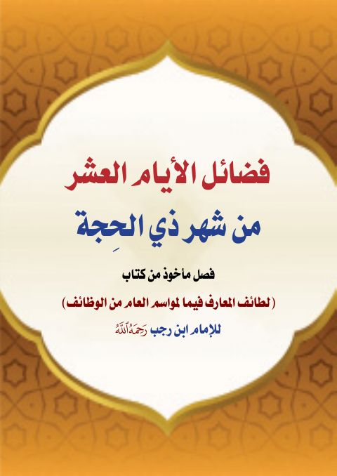

Downloads need an internet connection.
فضائل الأيام العشر من ذي الحجة فصل مأخوذ من كتاب لطائف المعارف للإمام ابن رجب رحمه الله
Authors: ابن رجب الحنبلي
▫️ العنوان: فضائل الأيام العشر من ذي الحجة فصل مأخوذ من كتاب لطائف المعارف للإمام ابن رجب رحمه الله ▪️ المؤلف: #عبد_الرحمن_بن_أحمد_بن_رجب_الحنبلي ▫️ الطبعة: 1 ▪️ عدد الأجزاء: 1 ▫️ الصفحات: 26 ▪️ نوع الوعاء: #كتاب ▫️ التصنيف الرئيسي: #الزهد_والرقائق ۪